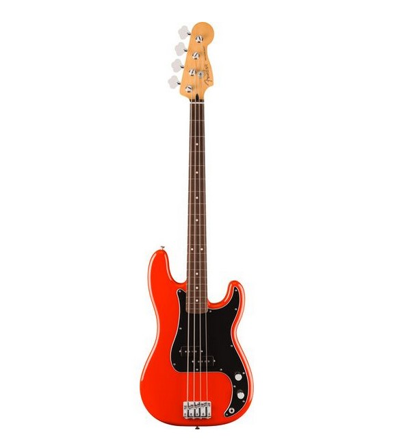

Fender Player II P Bass

Electric Bass
Body: Alder
Bolt-on neck: Maple
Fingerboard: Rosewood
White dot fingerboard inlays
Fingerboard radius: 241 mm (9.5")
Scale: 864 mm (34")
Nut width: 41.3 mm (1.625")
Synthetic bone nut
Neck profile: Modern "C"
20 Medium jumbo frets
3-Ply black/white/black pickguard
Pickup: Player Series Alnico 5 Precision Bass split coil
Volume and tone controls
Bridge: 4-saddle standard
Standard open-gear machine heads
Hardware finish: Nickel/chrome
Original strings: Fender USA 7250M Nickel-plated steel .045 - .105
Colour: Coral Red